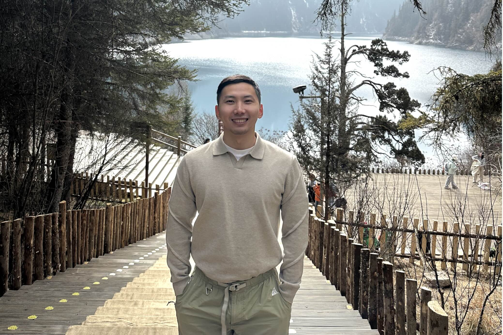
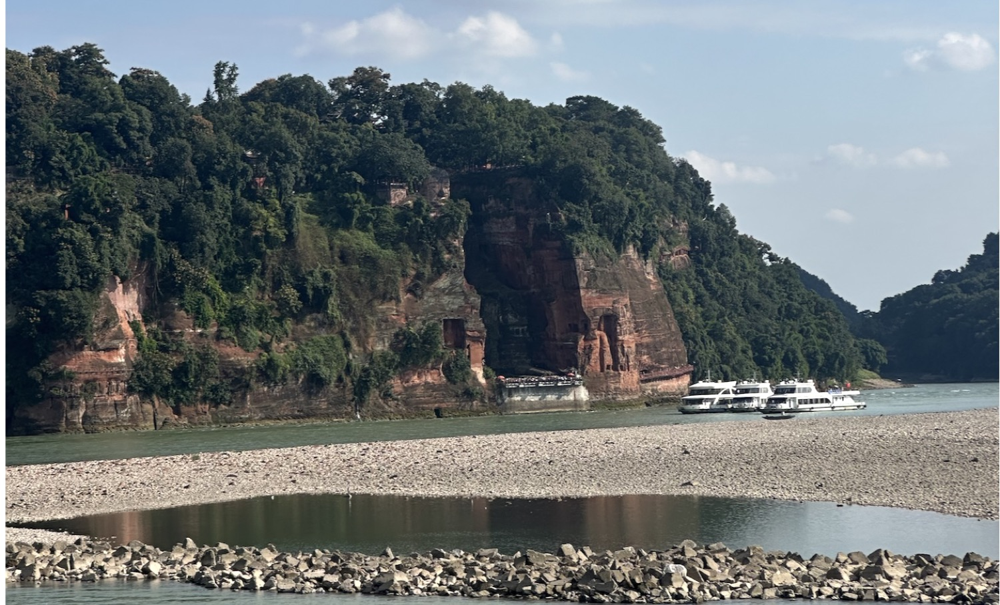
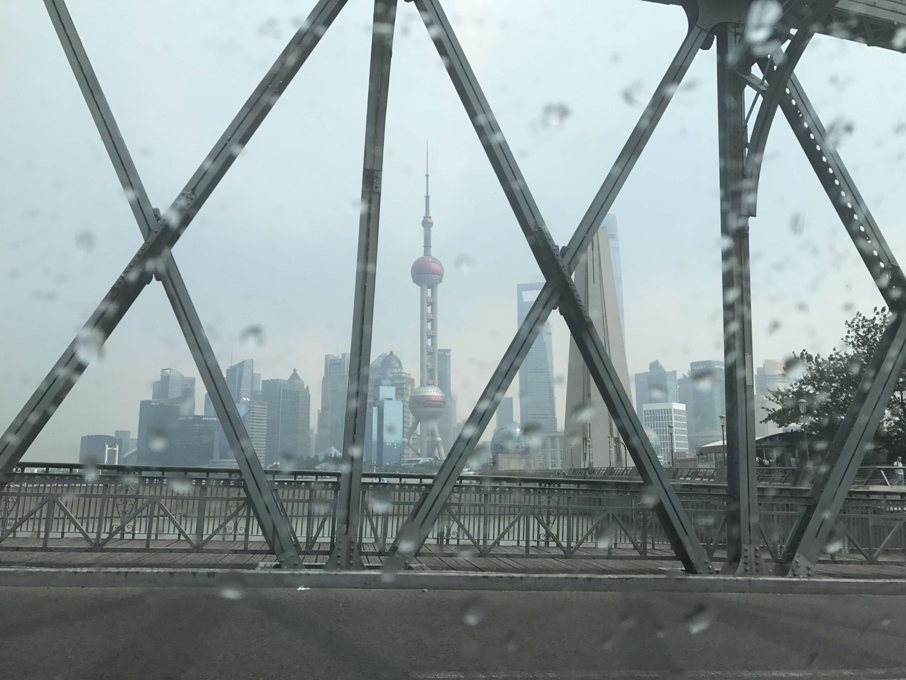
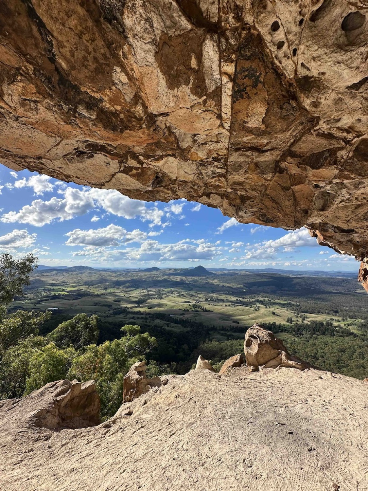
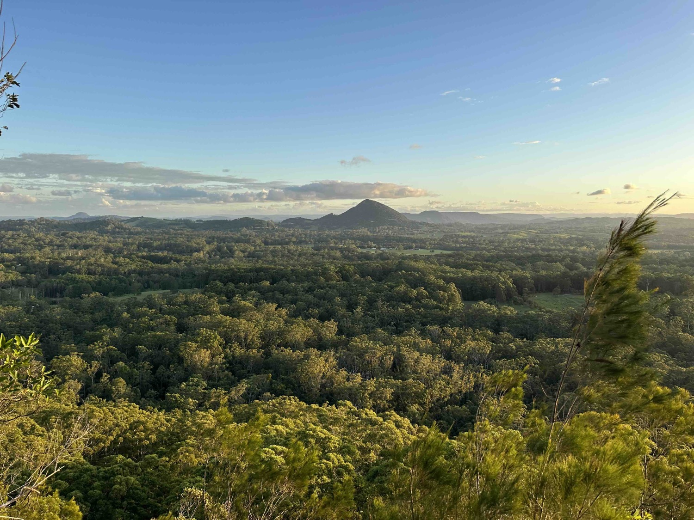
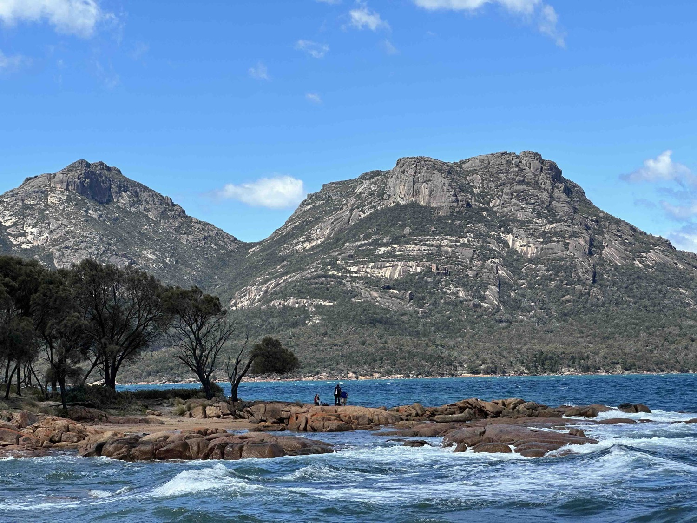
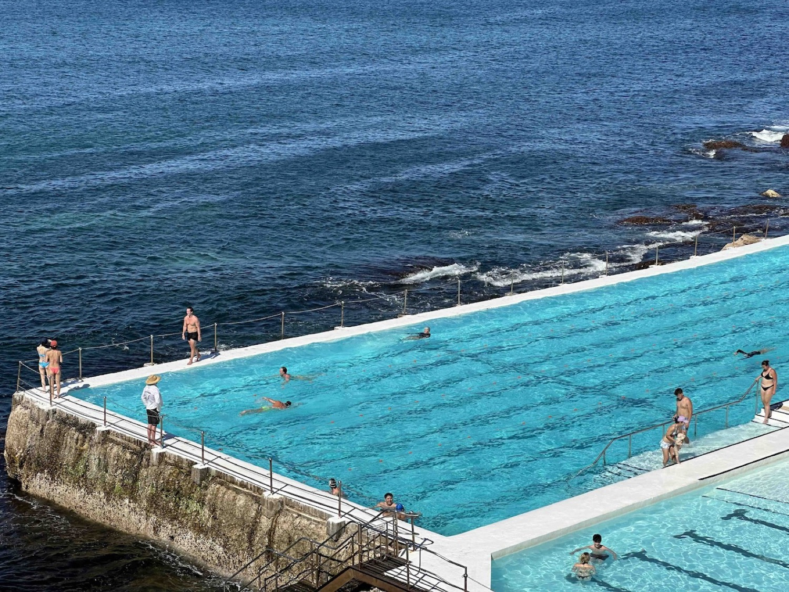
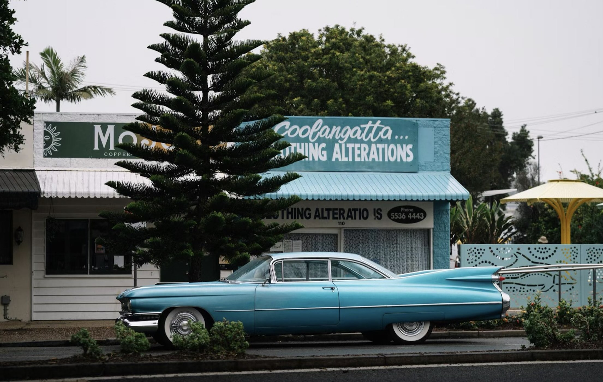
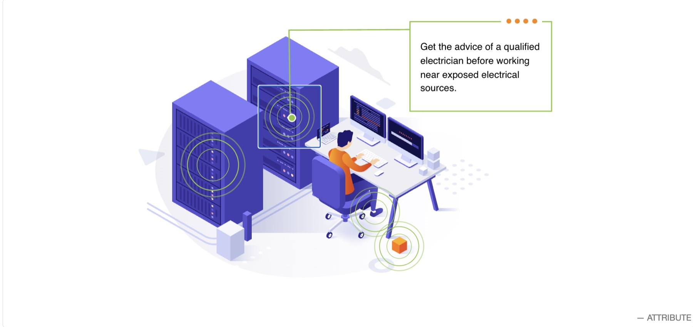
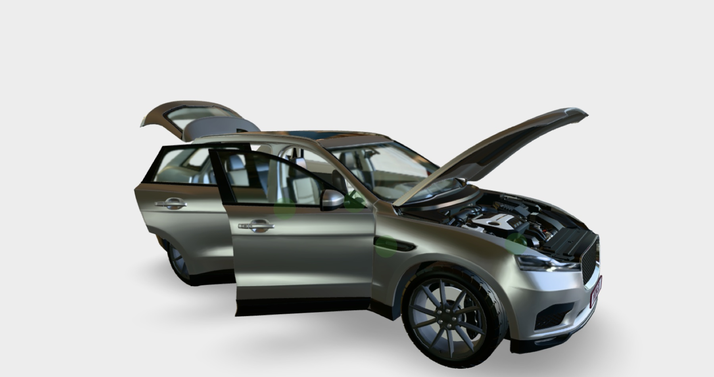

Graphic Design
Posters, campaigns and print layout led by typography and visual communication.
Illustrator · Photoshop
01 / About
I grew up in , China, home to the famous Giant Buddha, and since university have lived and worked across , , , , , and now Auckland. Being the outsider so many times over taught me humility, and how much it matters to see different cultures recognised and represented. This naturally shapes why the commitment to representing different cultures in classrooms matters to me.
In my spare time, I'm drawn to the outdoors, snowboarding, surfing, and rock climbing, which first brought me to New Zealand.






My teaching perspectives
To me, technology education is about exploring what students are genuinely interested in. Students are not passive recipients of knowledge but active constructors of it, especially through moments of cognitive conflict. Teaching is not transmitting fixed knowledge, it's engaging with the world through doing, reflecting, and growing.
This plays out through an iterative cycle: inquiry, ideation, prototyping, evaluation. Iteration is the core lesson, it shows students a first attempt is meant to be imperfect, and the value lies in what they learn from it. It shifts their mindset from "did I get it right?" to "what do I improve next?", a habit that extends beyond the classroom. Each cycle also connects new learning to what students already know.
Teaching in Aotearoa carries a unique responsibility. As a migrant teacher, I stay attentive to cultural representation and to where it's been overlooked,recognising that some curriculum content is Western-centric by default, and critically examining the hidden curriculum that comes with it. I actively bring cultural elements into projects and assignments, creating space to celebrate different cultures rather than treat one as the default.
02 / Teaching, tutoring & industry
Practicum teaching Digital Technology and Design & Visual Communication to Years 7–11 in IB frameworks — from CAD and 3D printing in Fusion 360 to web design and typography.
Tutor IGCSE Mathematics to Year 10, giving targeted, curriculum-aligned support.
Coordinate scheduling and client communication, and built a digital checkout system that improved inventory accuracy.
Teach Cambridge English (KET, PET, FCE) to learners aged 7–15 from Mandarin-speaking backgrounds.
Built interactive, web-based 3D learning with React, Blender and Three.js, turning curriculum into engaging digital content.
Supported IT and software-engineering students across Web Design, XR Prototyping and HCI through workshops, practicals and labs.
03 / A range of making — open a category to view projects
Posters, campaigns and print layout led by typography and visual communication.
Illustrator · Photoshop
Astro, street and portrait photography — light, timing and composition.
Long exposure · 35mm
Interactive online modules for vocational and school learning.
HCI · UX · Three.js
Interactive 3D models and CAD prototypes, built with Blender, Three.js and Fusion 360.
Blender · Three.js
Textile design and construction — material exploration and making in the workshop.
Materials · Making
Practical food technology — recipe development, nutrition and kitchen units.
Practical · Nutrition04 / Toolset
05 / Contact
Selected projects